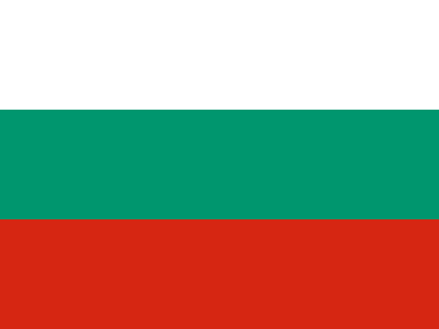

Bulgaria: bandera, capital y datos curiosos

- Capital
- Sofía
- Continente
- Europa
- Código
- BG
Bulgaria es un país de Europa y su capital es Sofía. Arriba ves su bandera: ¿la reconocerías entre cuatro opciones parecidas?
Dato curioso: Produce buena parte del aceite de rosa del mundo.
Jugar a adivinar banderas Chequia
Chequia Chipre
Chipre Dinamarca
Dinamarca Estonia
Estonia Francia
Francia Grecia
Grecia Irlanda
Irlanda Islandia
Islandia Letonia
Letonia Moldavia
Moldavia Noruega
Noruega Países Bajos
Países Bajos Polonia
Polonia Reino Unido
Reino Unido Rumania
Rumania Rusia
Rusia Ucrania
Ucrania